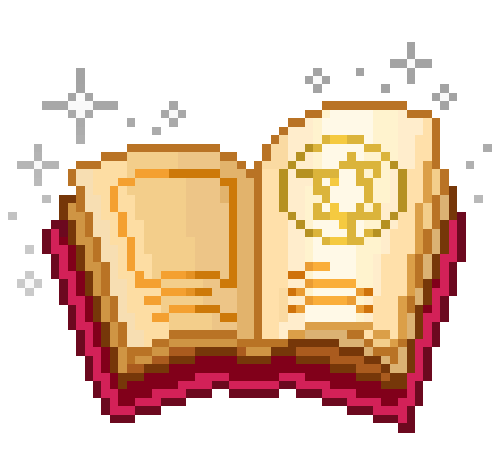

Histórias que merecem uma segunda vida. Garimpe seu próximo livro favorito!

Login
Abra as portas da nossa biblioteca.
Cadastre-se e encontre relíquias a preços de desapego.
Sebo Literário

Abra as portas da nossa biblioteca.
Cadastre-se e encontre relíquias a preços de desapego.